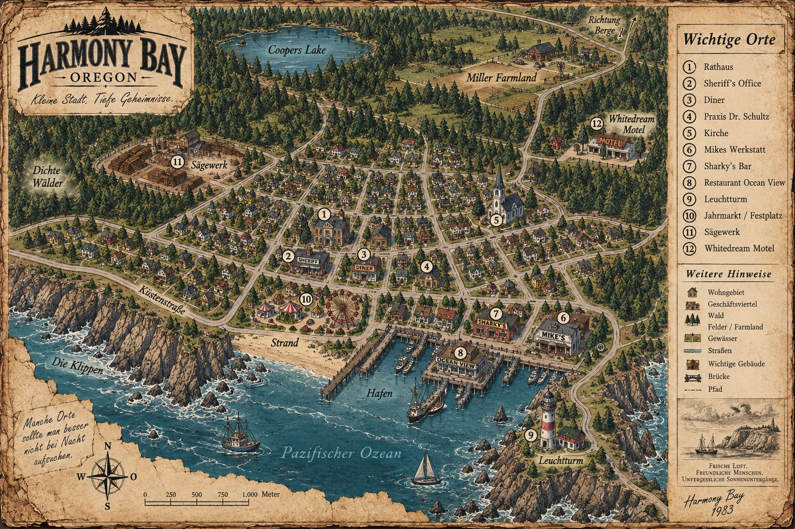

"Frische Luft. Freundliche Menschen. Unvergessliche Sonnenuntergänge."
Lädt vom Server...
> SYSTEM BOOT SEQUENCE INITIATED...
> CONNECTING TO SECURE MAINFRAME...
> CONNECTION ESTABLISHED.
> AUTHORIZATION REQUIRED.
> ZUGRIFF VERWEIGERT. FEHLERHAFTER CODE.
Notiere hier mit, was die Gruppe plant. Speichert live für alle.
Auf die Karte tippen = Pin setzen · Pin antippen = Optionen · Legende antippen = Pin-Art ein-/ausblenden · Strg+Mausrad oder zwei Finger = Zoom

Deine Daten liegen sicher in der Cloud. Falls du trotzdem eine Offline-Sicherung als Datei haben möchtest, klicke hier:
Lade eine .json-Datei hoch, um die Firebase-Cloud komplett auf diesen Stand zu überschreiben. Hilft bei versehentlich gelöschten Akten.